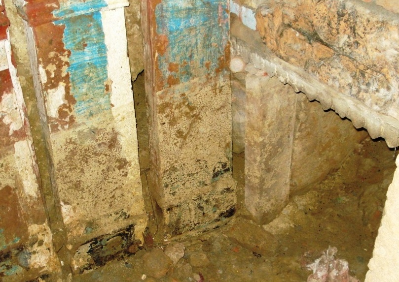
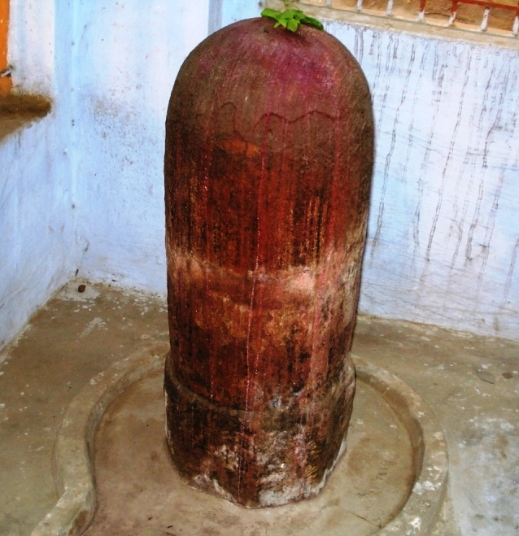

<?xml version="1.0" encoding="UTF-8"?><rss version="2.0"
	xmlns:content="http://purl.org/rss/1.0/modules/content/"
	xmlns:wfw="http://wellformedweb.org/CommentAPI/"
	xmlns:dc="http://purl.org/dc/elements/1.1/"
	xmlns:atom="http://www.w3.org/2005/Atom"
	xmlns:sy="http://purl.org/rss/1.0/modules/syndication/"
	xmlns:slash="http://purl.org/rss/1.0/modules/slash/"
	>

<channel>
	<title>Jaygeeshyeshwar &#8211; Varanasi Temples</title>
	<atom:link href="index.html" rel="self" type="application/rss+xml" />
	<link>../../../../../index.html</link>
	<description>Temples of Varanasi as referred to in Kashi Khand</description>
	<lastBuildDate>Thu, 19 Jun 2025 05:16:46 +0000</lastBuildDate>
	<language>en-US</language>
	<sy:updatePeriod>hourly</sy:updatePeriod>
	<sy:updateFrequency>1</sy:updateFrequency>
	<generator>https://wordpress.org/?v=4.6.29</generator>
	<item>
		<title>JAYGEESHYESHWAR</title>
		<link>../../../../../shiva-temples/jaygeeshyeshwar/index.html</link>
		<pubDate>Mon, 10 May 2010 02:02:17 +0000</pubDate>
		<dc:creator><![CDATA[admin]]></dc:creator>
				<category><![CDATA[Jaygeeshyeshwar]]></category>
		<category><![CDATA[Other Shiva Temples (E-K)]]></category>
		<category><![CDATA[Shiva Temples]]></category>
		<category><![CDATA[cave]]></category>
		<category><![CDATA[jayg]]></category>
		<category><![CDATA[lord bhairav]]></category>

		<guid isPermaLink="false">../../../../../p=347.html</guid>
		<description><![CDATA[Lord Shiva was in Mandarachal and it took a long time for him to return back. One highly learned Sage named Jayageesh undertook austere penance in a cave seeking return of Lord Shiva to Kashi.  Lord Shiva finally arrived in Kashi after King Divodas moved away from Kashi (Kindly refer Divodaseshwar). By the time the [&#8230;]]]></description>
				<content:encoded><![CDATA[<p>Lord Shiva was in Mandarachal and it took a long time for him to return back. One highly learned Sage named Jayageesh undertook austere penance in a cave seeking return of Lord Shiva to Kashi.  Lord Shiva finally arrived in Kashi after King Divodas moved away from Kashi (Kindly refer Divodaseshwar). By the time the Sage had become emaciated due to intense Tapas and fasting.</p>
<p></p>
<p style="text-align: center;"><strong>(JAYGEESH CAVE)</strong></p>
<p>Immediately after arriving at Kashi, Lord Shiva deputed Nandi with a divine Lotus with instructions that the latter should touch the Sage with the Lotus. The Sage immediately became very active and accompanied Nandi to Lord Shiva and Goddess Parvaty. He immediately started singing praises of Lord Shiva by way of various Mantras and slokas.  The Lord was immensely pleased with the sage and granted him a divine boon.  The Sage requested that the Lord should always be present in a Ling which would be installed by him (Sage).</p>
<p></p>
<p style="text-align: center;"><strong><span style="text-decoration: underline;">(JAYAGEESHESHWAR)</span></strong></p>
<p>The Lord agreed to it.  He further stated that those who worship the cave where the Sage worshipped the Lord, and practiced Yoga will attain Siddhi.  Devotees should regularly worship the Cave for all sorts of accomplishments in life.  Lord Shiva further stated that devotees who worship the Shiv Ling installed by the Sage, known as Jayageesheshwar, in the location of Jyeshteshwar will be absolved of all their sins. A devotee who feeds a Shiv Bhakt (devotee of Lord Shiva) in the Jyeshteshwar Kshetra(Region/area) will derive the benefits of feeding one crore hungry people.</p>
<p><strong><span style="text-decoration: underline;">LOCATION OF JAYAGEESHESHWAR</span></strong></p>
<p>The cave where Sage Jayageesh undertook austere penance is located at K.66/3, Ishwar Gangi (Agni Kund). For directions to reach this place, kindly refer Agni Dhruveshwar.  The Shiv Ling installed by the Sage is located at K.63/27, Bhoot Bhairav locality, near Jyeshta Gauri. For directions, kindly refer Jyeshta Gauri.</p>
<p>&nbsp;</p>
<h3><strong>Please watch our YouTube Video about Jayageesheshwar at following Link</strong></h3>
<p>&nbsp;</p>
<p><a href="https://www.youtube.com/watch?v=iyIiP3ax344&amp;t=6s">https://www.youtube.com/watch?v=iyIiP3ax344&amp;t=6s</a></p>
<p>&nbsp;</p>
<p>&nbsp;</p>
<p><strong><span style="text-decoration: underline;">TYPES OF POOJA</span></strong></p>
<p>The place of worship is open throughout the day and devotees can worship as per their convenience.</p>
]]></content:encoded>
			</item>
	</channel>
</rss>
